Formation and evolution of young stars in the Galactic Center
Aleksey Generozov, Sergei Nayakshin, Ann-Marie Madigan
Technion (Previously University of Colorado Boulder)
- Galactic Center S Stars
- Perets+2007: Binaries scattered from large distance.
- Madigan+2009*: Binary disruptions from instability in disk.
Disk/S star Connection
- Similar ages (Habibi+2017)
- S5-HVS1 (~1700 km s$^{-1}$ velocity;
Koposov+2020)

Formation: Molecular cloud disruption
- Bonell&Rice 2008, Gualandris et 2012
- Eccentric disc, but not disruptions
Simulation setup
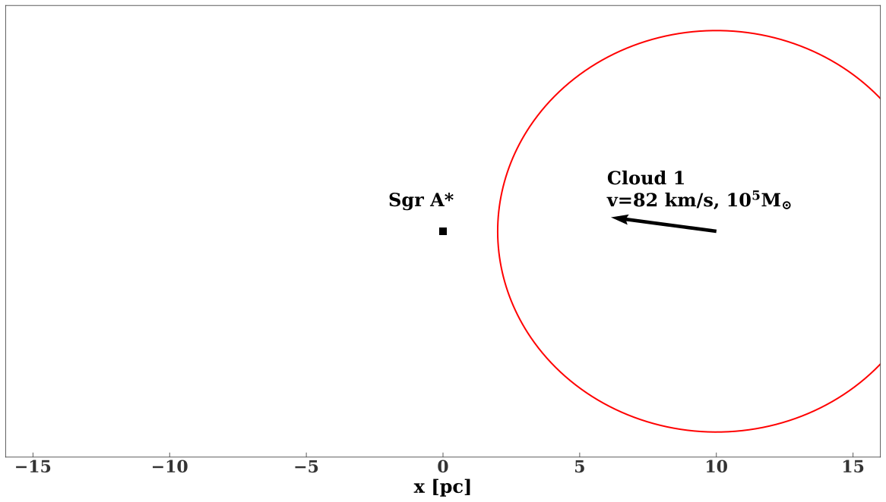Simulation setup
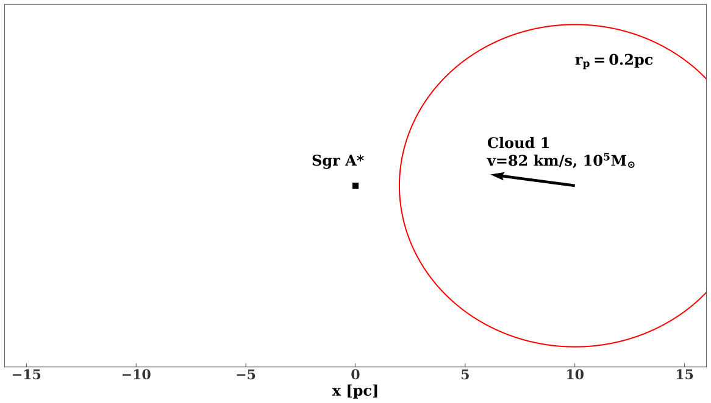Simulation setup
- Gadget3, SPH, Springel 2005
- 400K particles
- Cooling/Star formation (sink particles)
Background density
- Controls precession!
- Assume fixed $r^{-1.16}$ density (Schodel+2018)
- $1.2\times 10^6 M_{\odot}$ inside central pc.
Evolution of example cloud
- ~0.5 pc across
- ~$10^5-2\times10^5 $ yr
Angular momentum distribution of the disc
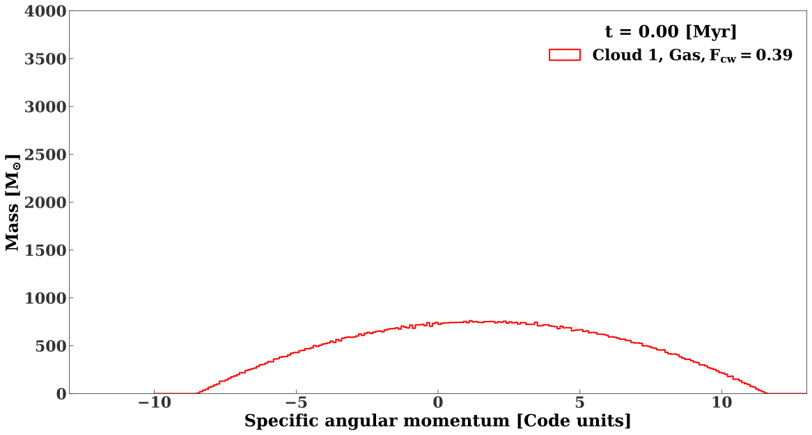Angular momentum distribution of the disc

Angular momentum distribution of the disc
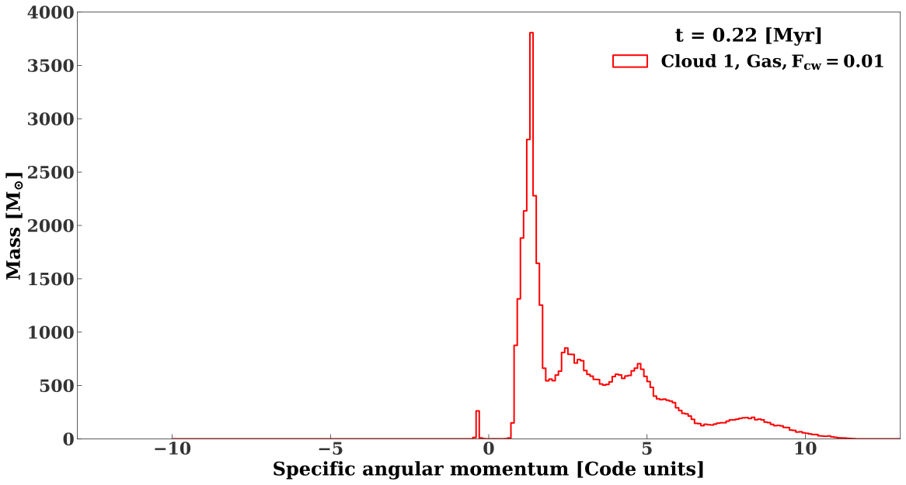Angular momentum distribution of the disc
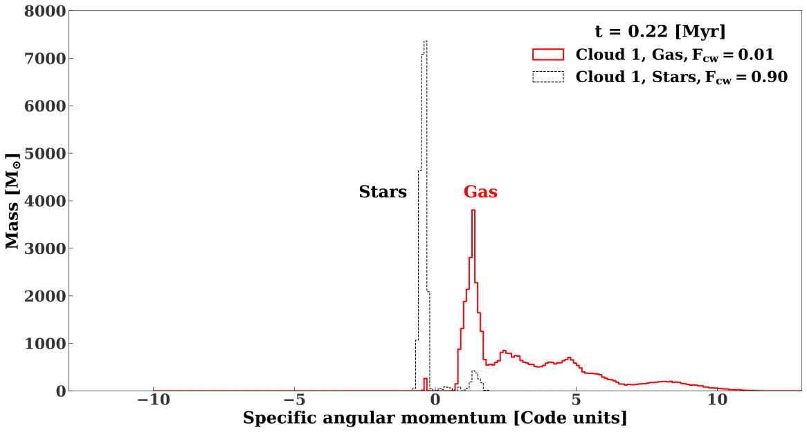Continuing evolution of eccentric disc
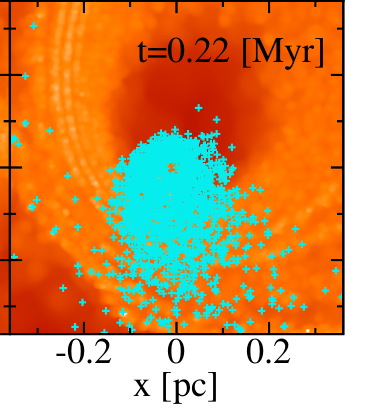
Bulk properties: Eccentricity
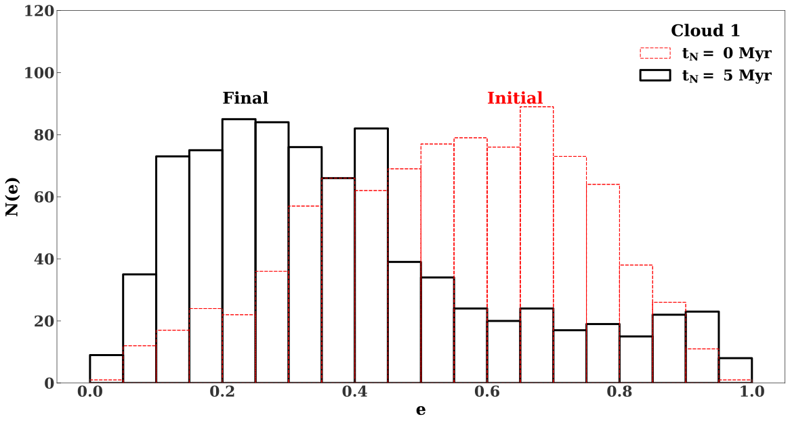Bulk properties: Eccentricity
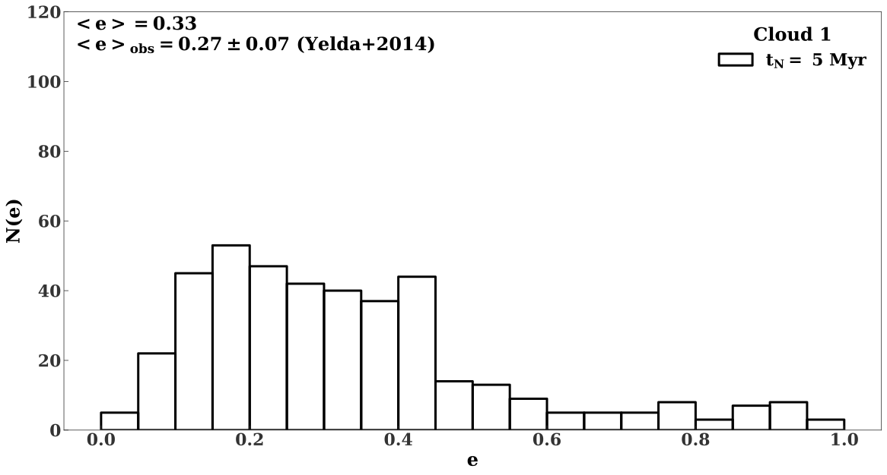Bulk properties: Surface density
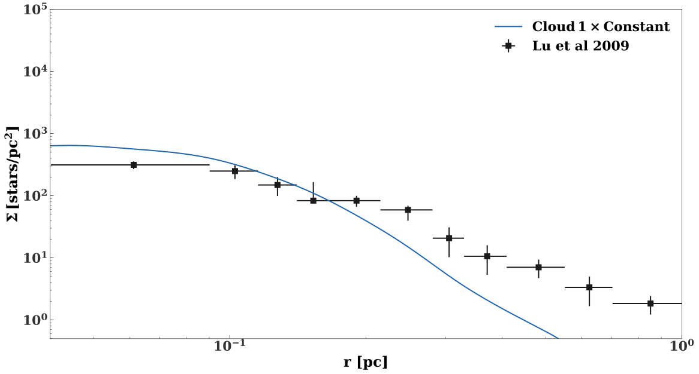Caveats
- Initial conditions
- Gas at late times
- Fixed background density
- No mass function
Binary disruption statistics
- 'Disruption'=Passing within $3\times 10^{-4}$ pc of SMBH
- Tidal radius of $20 M_{\odot}, 1$ AU Binary
Disruptions: Time distribution
Disruptions
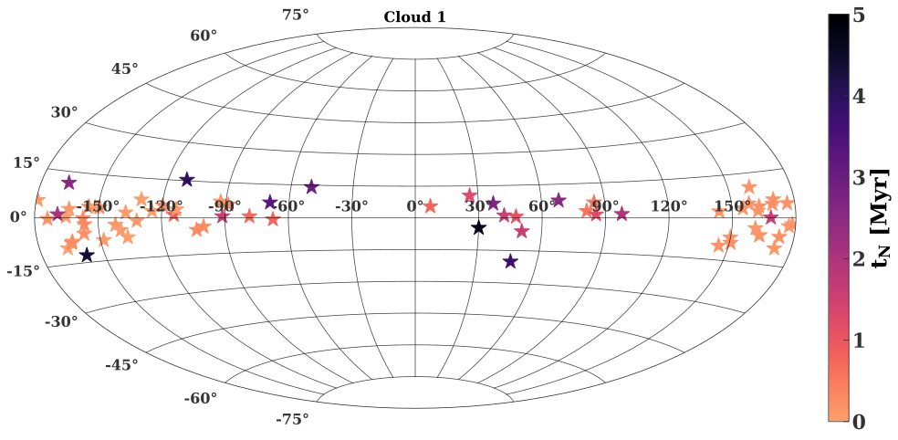Can realistic binary population reproduce the S stars? (Generozov&Madigan 2020)
Population of binaries
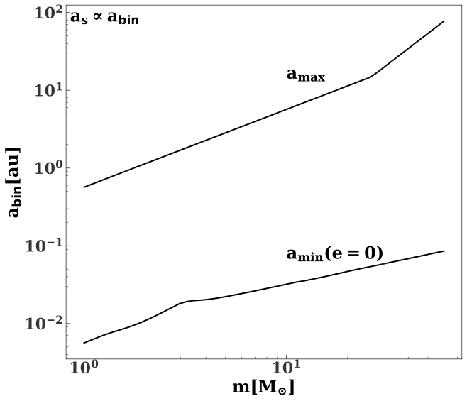- Binaries in the disk
- Require binaries don't evaporate within 4 Myr (approximate age of disk)
Population of binaries
| Parameter | Distribution |
| $a_{\rm bin}$ | $a_{\rm bin}^{-1}$ |
| $m_*$ | $m_*^{-1.7}, 8 M_{\odot}\leq m_* \leq 15 M_{\odot}$ (Lu+2013) |
| Eccentricity | Thermal |
Simulated binary disruptions:
- Direct 3-body integrations (AR--Chain; Mikkola&Merritt 2008).
- Binary COM approaches SMBH on eccentric orbit
- Semimajor axis of 0.05 pc (~Inner edge of disk)
Resonant relaxation
- Rauch&Tremaine 1996, Perets et al 2009, Merritt et al 2011, Antonini&Merritt 2013, Bar-Or&Fouvry 2018

- Must be effective over ~10 Myr lifetimes.
Galactic Center Density
- Likely $\sim 10^3$ BHs in central 0.1 pc mass segregation (e.g. Morris 1993) or in-situ formation in disk (Generozov et al 2018)
- $m_{\rm bh}(r)=2.4\times 10^4 \left(\frac{r}{0.1 {\rm pc}}\right) M_{\odot}$ (Antonini&Merritt 2013)
Galactic Center Density
- Likely $\sim 10^3$ BHs in central 0.1 pc mass segregation (e.g. Morris 1993) or in-situ formation in disk (Generozov et al 2018)
- $m_{\rm bh}(r)=2.4\times 10^4 \left(\frac{r}{0.1 {\rm pc}}\right) M_{\odot}$ (Antonini&Merritt 2013)
Diffusion coefficient(s)
- Use formalism from Bar-Or&Fouvry 2018
- $\frac{\partial P}{\partial t} =\frac{1}{2} \frac{\partial}{\partial j}\left[j D_{jj} \frac{\partial}{\partial j}\left[\frac{P}{j}\right]\right]$
Mass function discrepancy (Generozov 2021)
- Sampling/mass ratio effect
- See Sari et al 2010
Returning to hypervelocity stars
- Propagate ejected stars through Galactic potential
- Scatter in disruption orbits-->Scatter in $\mathbf{v}$
- Impulsive ejection event...
Model Galactic Potential
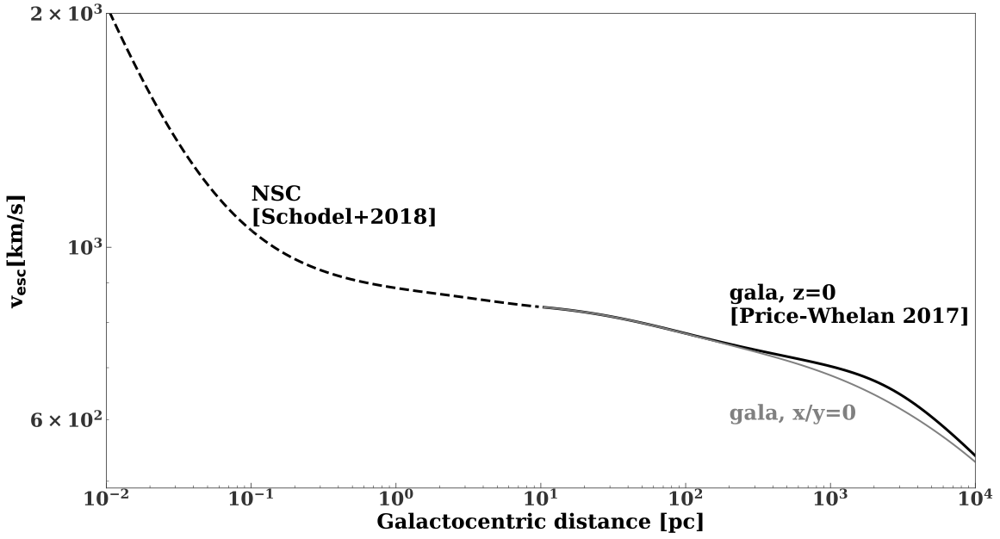After 5 Myr Propagation
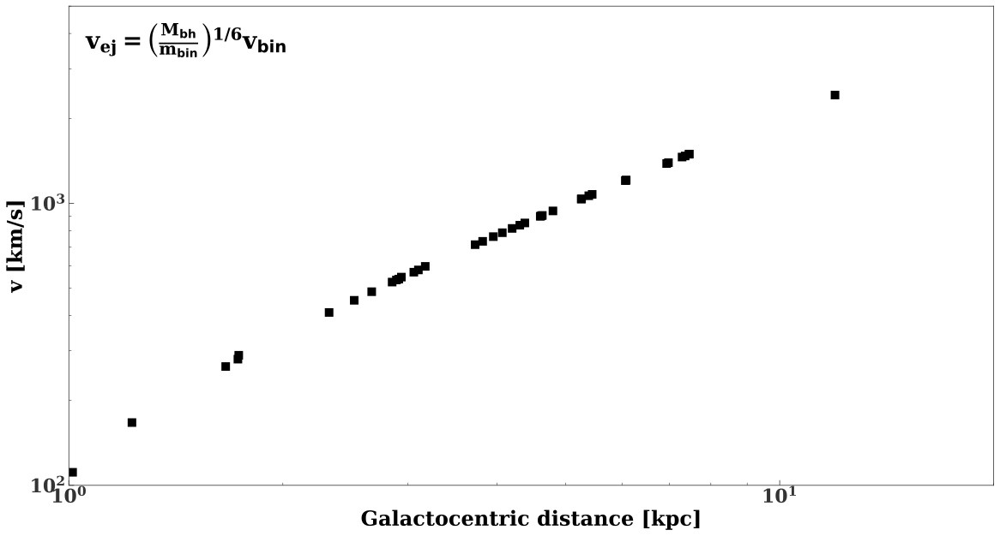Angular distribution (Generozov 2020)
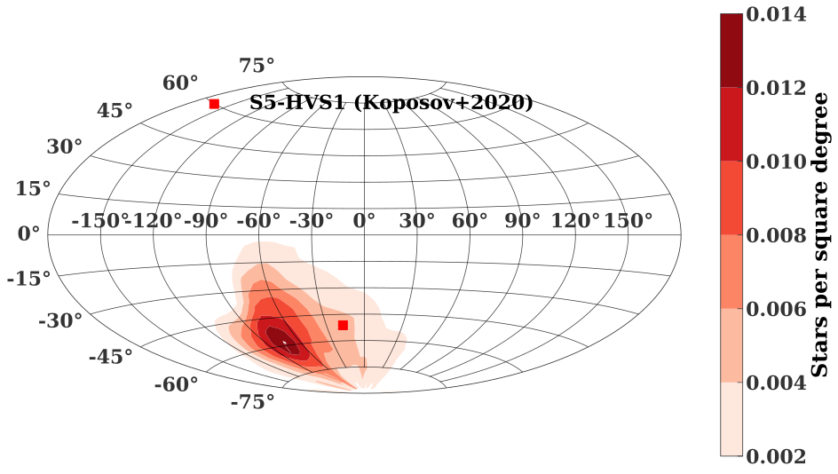Conclusions
- Cloud disruption can explain young disc in Galactic center.
- S stars produced by binary disruptions.
- Mass and velocity of initial cloud can be constrained.
- Disruption also produce clustered hypervelocity stars
Dependence on background density profile
- Steady-state density profile is steeper
- $r^{-1.5}-r^{-1.75}$ for low mass stars
- $r^{-2}$ for stellar mass black holes...
Dependence on background density profile
- Experimented with steeper density in N-body
- Similar number of disruption?!
- Disc starts with a strong primordial 'twist'